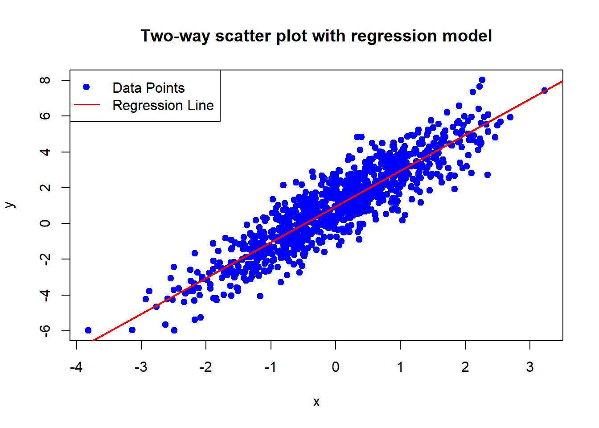
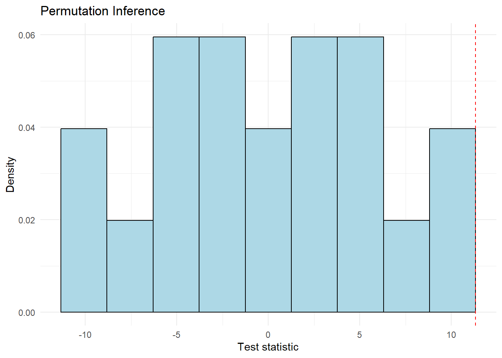
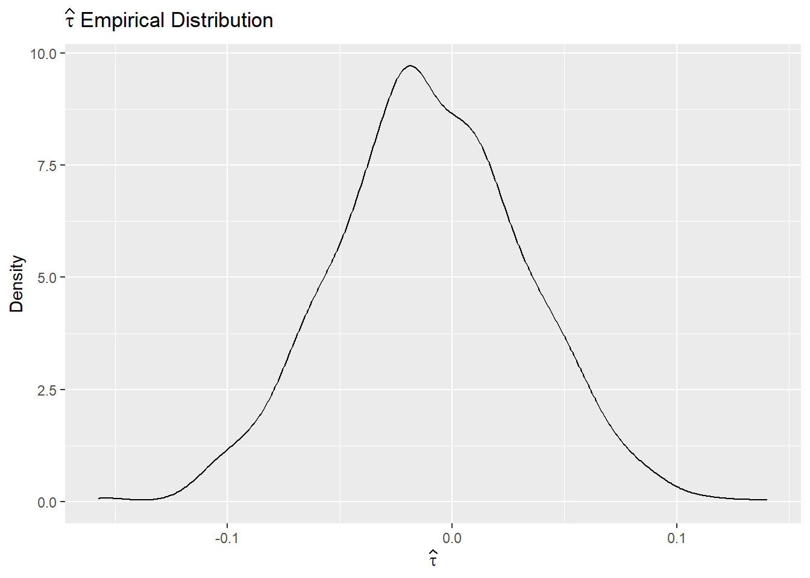

addNumbers <- function(a, b) {
sum <- (a + b)
return(sum)
}
addNumbers(10,5)[1] 15Functions in R are essential for efficient and organized programming. They allow you to encapsulate code for specific tasks, making your scripts more modular, reusable, and easier to understand and debug.
A simple function in R typically includes a name, arguments (inputs), a body (code that performs the operation), and a return value (the output). Here’s an example of a basic function that adds two numbers:
addNumbers <- function(a, b) {
sum <- (a + b)
return(sum)
}
addNumbers(10,5)[1] 15Arguments are placeholders for the data you pass to the function. They can be mandatory or optional, with optional arguments having default values:
multiplyNumbers <- function(a, b = 2) {
return(a * b)
}
multiplyNumbers(10)[1] 20Variables defined inside a function are local to that function. The return() function specifies the output of your function. If return() is not explicitly called, R will return the last evaluated expression.
Functions with arguments are particularly useful in data analysis, as they can be applied to various datasets or variables.
Example: Linear Regression Analysis Functions
We will create two functions for linear regression analysis:
Perform Linear Regression: This function performs a linear regression analysis and returns the model summary.
perform_linear_regression <- function(data, independent_var, dependent_var) {
formula <- as.formula(paste(dependent_var, "~", independent_var))
model <- lm(formula, data = data)
return(summary(model))
}Print Regression Results: This function prints the key results from the linear regression summary.
print_regression_results <- function(model_summary, description) {
cat("Results for", description, ":\n")
print(model_summary$coefficients)
cat("R-squared:", model_summary$r.squared, "\n")
cat("P-value:", pf(model_summary$fstatistic[1],
model_summary$fstatistic[2],
model_summary$fstatistic[3],
lower.tail = FALSE), "\n")
}To demonstrate the linear regression functions, let’s create some simulated data:
set.seed(123)
data <- data.frame(
marketing_spend = runif(100, 1, 1000),
sales = rnorm(100, 500, 50)
)Apply the functions to the simulated data:
# Perform Linear Regression
regression_results <- perform_linear_regression(data, "marketing_spend", "sales")
# Print Regression Results
print_regression_results(regression_results, "Sales vs Marketing Spend")Results for Sales vs Marketing Spend :
Estimate Std. Error t value Pr(>|t|)
(Intercept) 499.556503527 9.81762441 50.8836438 2.805010e-72
marketing_spend -0.004496064 0.01710817 -0.2628022 7.932548e-01
R-squared: 0.0007042484
P-value: 0.7932548 To start, we will simulate some data based on the following data generating process:
\(y_i = \beta_0 + \beta_1 x_i + \varepsilon_i\)
where \(\beta_0=1\), \(\beta_1=2\), and both \(x_i\) and \(\varepsilon_i\) are distributed \(\mathcal{N}(0,1)\). Having conducted this simulation, we will estimate a regression model to estimate \(\widehat\beta_1\). In the book, you will be asked to consider examples which are more appropriate for the treatment effects framework which we are considering.
set.seed(1213)
N <- 1000
x <- matrix(rnorm(N), N, 1) # 1000 observations of a single independent variable
y <- 1 + 2 * x + matrix(rnorm(N), N, 1) # Linear relationship with some noise
data <- data.frame(x = x, y = y)
# Linear Regression
model <- lm(y ~ x, data = data)
# Coefficients
beta1hat <- coef(model)["x"]
beta0hat <- coef(model)["(Intercept)"]
print(paste("beta 1 (Coefficient):", beta1hat))[1] "beta 1 (Coefficient): 2.00056952831892"print(paste("Intercept:", beta0hat))[1] "Intercept: 0.952072091906772"# Predictions
data$yhat <- predict(model, newdata = data)
# Plot
plot(data$x, data$y, main = "Two-way scatter plot with regression model",
xlab = expression(x), ylab = expression(y), pch = 19, col = 'blue')
abline(model, col = 'red', lwd = 2)
legend("topleft", legend = c("Data Points", "Regression Line"),
col = c("blue", "red"), pch = c(19, NA), lty = c(NA, 1))
Finally, we will do this 500 times, to see what the distribution of estimated paramters \(\widehat\beta_1\) looks like:
set.seed(1213)
beta1hats <- numeric(500)
for (i in 1:500) {
x <- matrix(rnorm(N), N, 1)
y <- 1 + 2 * x + matrix(rnorm(N), N, 1)
data <- data.frame(x = x, y = y)
model <- lm(y ~ x, data = data)
beta1hats[i] <- coef(model)["x"]
}
# Mean estimate
mean_beta1hat <- mean(beta1hats)
print(paste('Mean coefficient estimate is:', mean_beta1hat))[1] "Mean coefficient estimate is: 1.9995767174898"# Histogram
hist(beta1hats, breaks = 30, col = 'lightblue', border = 'black', main = "Regression estimates in 500 simulations",
xlab = expression(hat(beta)[1]), ylab = "Frequency")
abline(v = 2, col = "red", lwd = 2, lty = 2)
legend("topright", legend = c(expression(beta[1]), "Estimates"),
col = c("red", "lightblue"), lty = c(2, NA), lwd = c(2, NA))
To understand the equivalence between regression analysis and the comparison of means in a binary regression set-up, we refer to Section 2.1 of the online coding resource. In this section, we work with data from a randomized control trial that examines asset transfers to poor households in India, as discussed in the paper by Banerjee et al. (2021).
library(dplyr)
library(readxl)
library(plyr)
library(ggplot2)
library(xtable)
library(tidyr)
library(haven)
# Load the household data
data <- read.csv("Datasets/Banerjee_et_al_2021.csv")
# Simple Regression for ind_fin_el1
fit <- lm(ind_fin_el1 ~ treatment, data = subset(data, el1 == 1))
summary(fit) # Note down the coefficient for the treatment variable
Call:
lm(formula = ind_fin_el1 ~ treatment, data = subset(data, el1 ==
1))
Residuals:
Min 1Q Median 3Q Max
-1.2555 -0.3219 -0.1846 0.0458 4.6377
Coefficients:
Estimate Std. Error t value Pr(>|t|)
(Intercept) 0.135439 0.030306 4.469 8.97e-06 ***
treatment -0.009589 0.041626 -0.230 0.818
---
Signif. codes: 0 '***' 0.001 '**' 0.01 '*' 0.05 '.' 0.1 ' ' 1
Residual standard error: 0.5931 on 813 degrees of freedom
(166 observations deleted due to missingness)
Multiple R-squared: 6.527e-05, Adjusted R-squared: -0.001165
F-statistic: 0.05307 on 1 and 813 DF, p-value: 0.8179coef_fit <- coef(fit)["treatment"] # Extract the coefficient for the treatment variable
# Display the regression coefficient
cat("Coefficient for treatment in regression:", coef_fit, "\n")Coefficient for treatment in regression: -0.009589323 # Calculate mean for the treatment group
mean_treatment <- mean(subset(data, treatment == 1 & el1 == 1)$ind_fin_el1, na.rm = TRUE)
# Calculate mean for the control group
mean_control <- mean(subset(data, treatment == 0 & el1 == 1)$ind_fin_el1, na.rm = TRUE)
# Calculate and display the difference in means
diff_means <- mean_treatment - mean_control
cat("Difference in means (Treatment - Control):", diff_means, "\n")Difference in means (Treatment - Control): -0.009589323 # Display the comparison
cat("The coefficient from the regression should be equal to the difference in means to demonstrate equivalence.\n")The coefficient from the regression should be equal to the difference in means to demonstrate equivalence.Randomization inference, although a theoretical concept, is best illustrated with practical examples. A particularly illustrative approach is visualization through tabular permutation. The following online coding resource provides a detailed introduction to this method. In this context, we will work with data from the study “Long-Term effects of the Targeting the Ultra Poor Program” conducted by Abhijit Banerjee, Esther Duflo, and Garima Sharma.
It is perhaps useful to see a simple example. Consider the case of 6 units, with 3 observations randomly assigned treatment. Imagine that the observed outcomes were then, in the treatment group: \((34,27,29)\), and in the control group: \((14,18,24)\). A simple comparison of means estimator suggests that the treatment effect is 11.33. To calculate a p-value, we can permute all the possible combinations, and ask what proportion of these are greater than or equal to this treatment effect. If we consider random orderings of 6 units, this suggests that there are \(6!\) possible combinations, but in reality, as we are randomly choosing 3 units from these 6 to assign a permuted treatment status, the actual value of different combinations is \(6\choose 3\) \(=\frac{6!}{3!*(6-3)!}=20\). We document each of these possible permutations, as well as their permuted treatment effect in the Table below. In this case, we can see that only 1 of the 20 different permutations is greater than or equal to 11.33 he original treatment status). Suggesting an exact p-value of \(1/20=0.05\).
| Permutation | T1 | T2 | T3 | C1 | C2 | C3 | Estimate |
|---|---|---|---|---|---|---|---|
| Original (1) | 34 | 27 | 29 | 14 | 18 | 24 | 11.33 |
| 2 | 34 | 27 | 14 | 29 | 18 | 24 | 1.33 |
| 3 | 34 | 27 | 18 | 14 | 29 | 24 | 4 |
| 4 | 34 | 27 | 24 | 14 | 18 | 29 | 8 |
| 5 | 34 | 14 | 29 | 27 | 18 | 24 | 2.67 |
| 6 | 34 | 18 | 29 | 14 | 27 | 24 | 5.33 |
| 7 | 34 | 24 | 29 | 14 | 18 | 27 | 9.33 |
| 8 | 14 | 27 | 29 | 34 | 18 | 24 | -2 |
| 9 | 18 | 27 | 29 | 14 | 34 | 24 | 0.67 |
| 10 | 24 | 27 | 29 | 14 | 18 | 34 | 4.67 |
| 11 | 34 | 14 | 18 | 27 | 29 | 24 | -4.67 |
| 12 | 34 | 14 | 24 | 27 | 18 | 29 | -0.67 |
| 13 | 34 | 18 | 24 | 14 | 27 | 29 | 2 |
| 14 | 14 | 27 | 18 | 34 | 29 | 24 | -9.33 |
| 15 | 14 | 27 | 24 | 34 | 18 | 29 | -5.33 |
| 16 | 18 | 27 | 24 | 14 | 34 | 29 | -2.67 |
| 17 | 14 | 18 | 29 | 34 | 27 | 24 | -8 |
| 18 | 14 | 24 | 29 | 34 | 18 | 27 | -4 |
| 19 | 18 | 24 | 29 | 14 | 34 | 27 | -1.33 |
| 20 | 14 | 18 | 24 | 34 | 27 | 29 | -11.33 |
# Load required libraries
library(gtools)Warning: package 'gtools' was built under R version 4.2.3library(ggplot2)
# Enter data
Y <- c(34, 27, 29, 14, 18, 24)
W <- c(1, 1, 1, 0, 0, 0)
data <- data.frame(Y, W)
# Calculate Difference in means estimator
tau <- mean(data$Y[data$W == 1]) - mean(data$Y[data$W == 0])
# Generate permutations of W
Wperm <- permutations(n = 6, r = 6, v = c(1,1,1,0,0,0), set = FALSE, repeats.allowed = FALSE)
# Calculate permuted treatment effects
Taus <- apply(Wperm, 1, function(p) {
dataP <- data.frame(Y, W = p)
mean(dataP$Y[dataP$W == 1]) - mean(dataP$Y[dataP$W == 0])
})
# Calculate p-values
p_2side <- sum(abs(Taus) >= tau) / length(Taus)
p_1side <- sum(Taus >= tau) / length(Taus)
cat("The two-sided p-value is:", p_2side, "\n")The two-sided p-value is: 0.1 cat("The one-sided p-value is:", p_1side, "\n")The one-sided p-value is: 0.05 # Generate graph
ggplot(data.frame(Taus), aes(x = Taus)) +
geom_histogram(bins = 10, color = "black", fill = "lightblue", aes(y = ..density..)) +
geom_vline(xintercept = tau, color = "red", linetype = "dashed") +
labs(x = "Test statistic", y = "Density") +
theme_minimal() +
ggtitle("Permutation Inference")Warning: The dot-dot notation (`..density..`) was deprecated in ggplot2 3.4.0.
ℹ Please use `after_stat(density)` instead.
Banerjee, Duflo, and Sharma (2021)
library(dplyr)
library(readxl)
library(plyr)
library(ggplot2)
library(xtable)
library(tidyr)
library(haven)
data <- read.csv("Datasets/Banerjee_et_al_2021.csv")
########Financial Index###########
# Observed treatment effect
obs_effect <- mean(data$ind_fin_el1[data$treatment == 1], na.rm = TRUE) - mean(data$ind_fin_el1[data$treatment == 0], na.rm = TRUE)
# Randomization inference
n_permutations <- 10000
permuted_effects <- numeric(n_permutations)
for (i in 1:n_permutations) {
permuted_treatment <- sample(data$treatment)
permuted_effect <- mean(data$ind_fin_el1[permuted_treatment == 1], na.rm = TRUE) - mean(data$ind_fin_el1[permuted_treatment == 0], na.rm = TRUE)
permuted_effects[i] <- permuted_effect
}
# Calculate p-value
p_value <- mean(abs(permuted_effects) >= abs(obs_effect))
list(observed_effect = obs_effect, p_value = p_value)$observed_effect
[1] -0.009589323
$p_value
[1] 0.8222########Asset Index###########
# Observed treatment effect
obs_effect <- mean(data$asset_ind_tot_el1[data$treatment == 1], na.rm = TRUE) - mean(data$asset_ind_tot_el1[data$treatment == 0], na.rm = TRUE)
# Randomization inference
n_permutations <- 10000
permuted_effects <- numeric(n_permutations)
for (i in 1:n_permutations) {
permuted_treatment <- sample(data$treatment)
permuted_effect <- mean(data$asset_ind_tot_el1[permuted_treatment == 1], na.rm = TRUE) - mean(data$asset_ind_tot_el1[permuted_treatment == 0], na.rm = TRUE)
permuted_effects[i] <- permuted_effect
}
# Calculate p-value
p_value <- mean(abs(permuted_effects) >= abs(obs_effect))
list(observed_effect = obs_effect, p_value = p_value)$observed_effect
[1] 0.4077528
$p_value
[1] 6e-04Some introduction to the topic, see manuscript and transcript a short summary of the motivation and work with Banerjee et al. (2021). First we consider the main regression in Code Call-Out 2.1 \[Y_i = \mu + \tau_{ATE}W_i + \varepsilon_i\]
Call:
lm(formula = ind_fin_el1 ~ treatment, data = subset(data, el1 ==
1))
Residuals:
Min 1Q Median 3Q Max
-1.2555 -0.3219 -0.1846 0.0458 4.6377
Coefficients:
Estimate Std. Error t value Pr(>|t|)
(Intercept) 0.135439 0.030306 4.469 8.97e-06 ***
treatment -0.009589 0.041626 -0.230 0.818
---
Signif. codes: 0 '***' 0.001 '**' 0.01 '*' 0.05 '.' 0.1 ' ' 1
Residual standard error: 0.5931 on 813 degrees of freedom
(166 observations deleted due to missingness)
Multiple R-squared: 6.527e-05, Adjusted R-squared: -0.001165
F-statistic: 0.05307 on 1 and 813 DF, p-value: 0.8179In this case the standard errors are computed as the standard OLS formula assuming homocedastic errors, also heterocedasticity-robust standard errors may be computed but in both cases depending on distribution assumptions or aproximations based on asymptotic theory. This assumptions to compute standard errors consequently affect the statistic and p-value to determine the estimator significance. An alternative that does not depend on these assumptions is to use resampling methods like bootstrap to compute a consistent estimator of the variance or statistic.
There is more than one way to make bootstrap, within this ways we can find parametric and non-parametric methods. In this example we show a non-parametric bootstrap. The first step is to sample with replacement the residuals \(\left\{\widehat{\varepsilon}_i\right\}_{i=1}^{N} = \left\{y_i - \widehat{\mu} - \widehat{\tau}w_i\right\}_{i=1}^{N}\) from the original regression, obtaining \(N\) resampled errors \(\left\{\widehat{\varepsilon}_i^{(1)}\right\}_{i}^{N}\)
resampled <- sample(fit$residuals, replace = T,
size = length(fit$residuals))With this resampled errors build an artificial outcome using the estimates from the original regression \[\left\{y_i^{(1)}\right\}_{i=1}^{N} = \left\{\widehat{\mu} + \widehat{\tau} w_i + \widehat{\varepsilon}_i^{(1)}\right\}_{i=1}^{N}\]
artificial <- data.frame(treatment = fit$model$treatment,
errors = resampled)
artificial$outcome <- fit$coefficients["(Intercept)"] + fit$coefficients["treatment"] + artificial$treatment + artificial$errorsWith this artificial sample estimates with standard OLS procedure the coefficient of interest
artificialModel <- lm(formula = outcome ~ treatment,
data = artificial)
summary(artificialModel)
Call:
lm(formula = outcome ~ treatment, data = artificial)
Residuals:
Min 1Q Median 3Q Max
-1.19336 -0.29031 -0.15426 0.09845 3.08111
Coefficients:
Estimate Std. Error t value Pr(>|t|)
(Intercept) 0.06368 0.02412 2.64 0.00846 **
treatment 1.05417 0.03313 31.82 < 2e-16 ***
---
Signif. codes: 0 '***' 0.001 '**' 0.01 '*' 0.05 '.' 0.1 ' ' 1
Residual standard error: 0.4721 on 813 degrees of freedom
Multiple R-squared: 0.5546, Adjusted R-squared: 0.554
F-statistic: 1012 on 1 and 813 DF, p-value: < 2.2e-16Now repeat the previous steps \(B\) times and get \(B\) estimates of \(\widehat{\tau}\)
taus <- numeric(1000)
for (i in 1:1000) {
resampled <- sample(fit$residuals, replace = T,
size = length(fit$residuals))
artificial <- data.frame(treatment = fit$model$treatment,
errors = resampled)
artificial$outcome <- fit$coefficients["(Intercept)"] + fit$coefficients["treatment"] * artificial$treatment + artificial$errors
artificialModel <- lm(formula = outcome ~ treatment,
data = artificial)
taus[i] <- artificialModel$coefficients["treatment"]
}Now you have \(B\) estimates of \(\tau\), \(\left\{\widehat{\tau}^{(b)}\right\}_{b=1}^{B}\), with which can get an empirical distribution as follows:
ggplot() + geom_density(aes(x = taus)) +
labs(title = latex2exp::TeX(input = "$\\widehat{\\tau}$ Empirical Distribution"),
x = latex2exp::TeX(input = "$\\widehat{\\tau}$"),
y = "Density")
As there can be seen in the empirical distribution the distribution is almost centered at 0 with the greater density around 0 so is reasonable to not reject the null hypothesis of \(\tau = 0\).
With \(\left\{\widehat{\tau}^{(b)}\right\}_{b=1}^{B}\) also can be computed an empirical variance or confidence interval based on empirical quantiles as follows
var_tau <- var(taus)
lower <- quantile(taus, 0.025)
upper <- quantile(taus, 0.975)
print(paste0("The empirical 95% confidence interval is: [",
round(lower, 3), ",", round(upper,3), "]."))[1] "The empirical 95% confidence interval is: [-0.093,0.073]."As seen in the empirical 95% confidence interval zero is included.